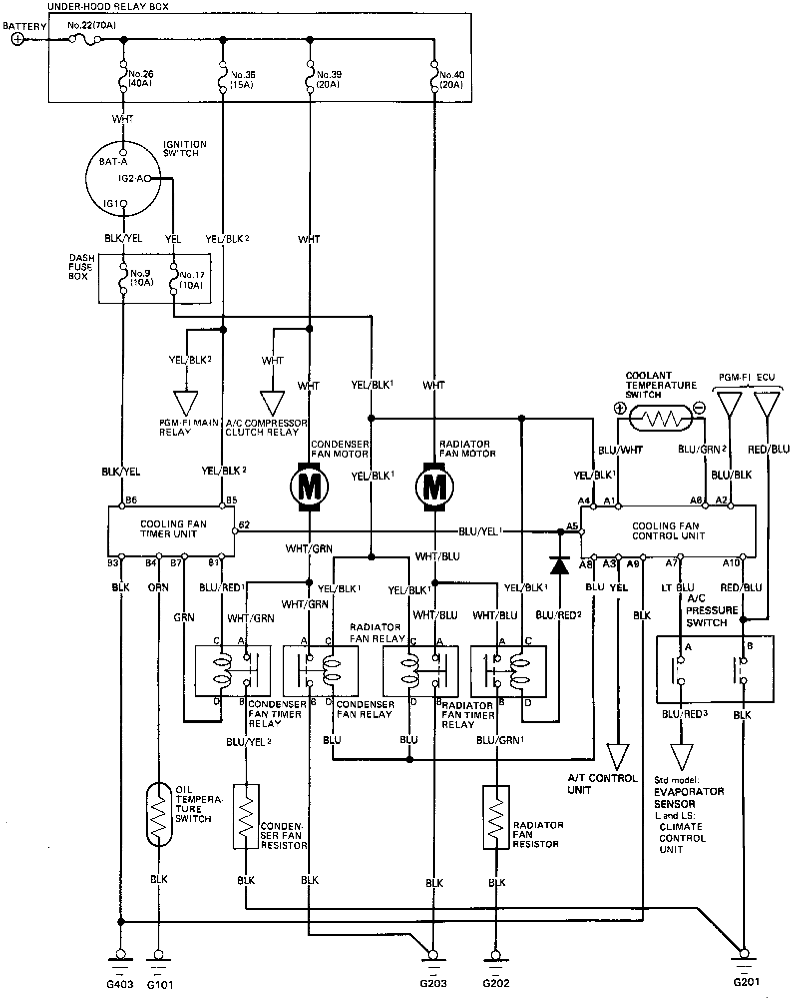

Coupe
NOTE: Several different wires have the same color. They have been given a number suffix to distinguish them (for example YEL/BLK1 and YEL/BLK2 are not the same).A/C PRESSURE SWITCH
A: ON between 210 kPa (2.1 kg/cm2, 30 psi) and 2700 kPa (27 kg/sm2, 384 psi)
B: ON below 1350 kPa (13.5 kg/cm2, 192 psi)
